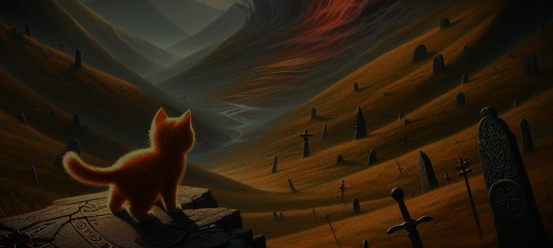
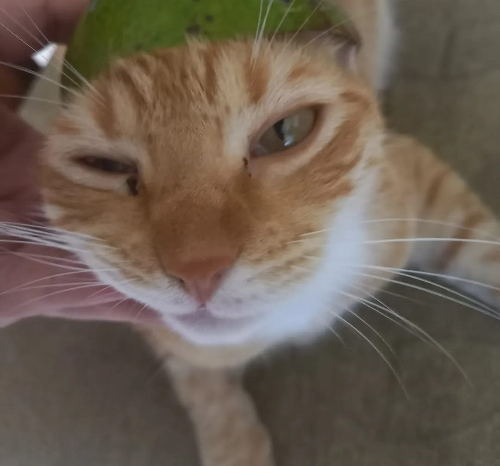
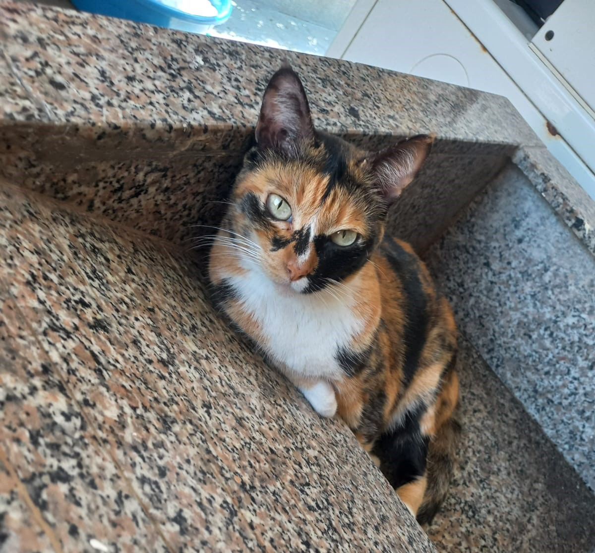

Please take a look! Dont leave yet!

Welcome to Cat's Hopecore! :3
Hey Stranger!
Welcome “Stranger” to our site! This page is a project that I together with some friends have planned a long time ago to bring something positive to everyone who is within our reach and at the same time uses social networks. Behind this website there are many collaborators who want to help everyone! ₍^. ̫.^₎. In our “Contact” section you can send us messages either to get in touch with us, to volunteer for this amazing project or to give us recommendations on how to improve the site itself! ≽^•⩊•^≼
What to Expect on our website?
Curiosity piqued? Good! You'll find:
- Expect daily doses of positivity!
- Heartwarming content!
- Uplifting quotes and affirmations!
- Lots of cats content!
- Encouraging stories from real people!
- A sprinkle of unexpected joy!

Andrea's Testimony
Before I discovered this site, I was feeling lost and discouraged. Life seemed like a constant challenge and I couldn't find the motivation to keep going. One day, by chance, I came across this site and decided to give it a try. From the very first moment.

Ana's Testimony
I have always been an optimistic person, but sometimes I felt overwhelmed by life's challenges. This site has helped me find a constant source of positivity and motivation. The inspirational messages and inspiring stories I find here remind me that even in the toughest of times..
Origin of the creation of our beloved website!
It all started with a simple idea, a spark of hope in a sometimes overwhelming world. A group of friends, united by a desire to make a positive difference, gathered around a cup of coffee and shared their dreams of creating a space where everyone could find encouragement and support.
We realized that, despite the differences that separate us, we all share a need for connection, to feel part of something bigger than ourselves. And so, with a heart full of excitement, we decided to build this website.
We wanted to create a digital haven where people could escape negativity and find inspiration in every corner. A place where smiles were contagious and where every word conveyed a message of hope. With every post, every story and every comment, our goal is to build a strong and supportive community, where everyone feels welcome and valued.
What is our purpose? Simple: we want the world to be a slightly better place, a place where positivity is contagious and where each of us can reach our full potential. We believe that, together, we can make a lasting impact on the world.